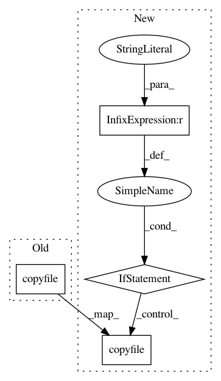

3a4338bc06c9f207f8911dd16c5084759c4ae990,stanza/utils/prepare_tokenizer_treebank.py,,prepare_ud_dataset,#,72
Before Change
shutil.copyfile(input_conllu,
f"{tokenizer_dir}/{short_name}.{dataset}.gold.conllu")
shutil.copyfile(input_txt,
f"{tokenizer_dir}/{short_name}.{dataset}.txt")
if short_language == "vi":
postprocess_vietnamese_tokenizer_data.main([input_txt,
"--char_level_pred", f"{tokenizer_dir}/{short_name}-ud-{dataset}.toklabels",
After Change
input_conllu = find_treebank_dataset_file(treebank, udbase_dir, dataset, "conllu")
input_conllu_copy = f"{tokenizer_dir}/{short_name}.{dataset}.gold.conllu"
if short_name == "sl_ssj":
preprocess_ssj_data.process(input_txt, input_conllu, input_txt_copy, input_conllu_copy)
else:
os.makedirs(tokenizer_dir, exist_ok=True)
shutil.copyfile(input_txt, input_txt_copy)
shutil.copyfile(input_conllu, input_conllu_copy)
prepare_tokenizer_data.main([input_txt_copy,
input_conllu_copy,
"-o", f"{tokenizer_dir}/{short_name}-ud-{dataset}.toklabels",
"-m", f"{tokenizer_dir}/{short_name}-ud-{dataset}-mwt.json"])
In pattern: SUPERPATTERN
Frequency: 3
Non-data size: 4
Instances
Project Name: stanfordnlp/stanza
Commit Name: 3a4338bc06c9f207f8911dd16c5084759c4ae990
Time: 2020-11-21
Author: horatio@gmail.com
File Name: stanza/utils/prepare_tokenizer_treebank.py
Class Name:
Method Name: prepare_ud_dataset
Project Name: stanfordnlp/stanza
Commit Name: 3a4338bc06c9f207f8911dd16c5084759c4ae990
Time: 2020-11-21
Author: horatio@gmail.com
File Name: stanza/utils/prepare_tokenizer_treebank.py
Class Name:
Method Name: prepare_ud_dataset
Project Name: stanfordnlp/stanza
Commit Name: 5df5c95a05bdca1ae618545e65d1a1ae6ef5f13f
Time: 2020-11-21
Author: horatio@gmail.com
File Name: stanza/utils/prepare_tokenizer_treebank.py
Class Name:
Method Name: prepare_ud_dataset